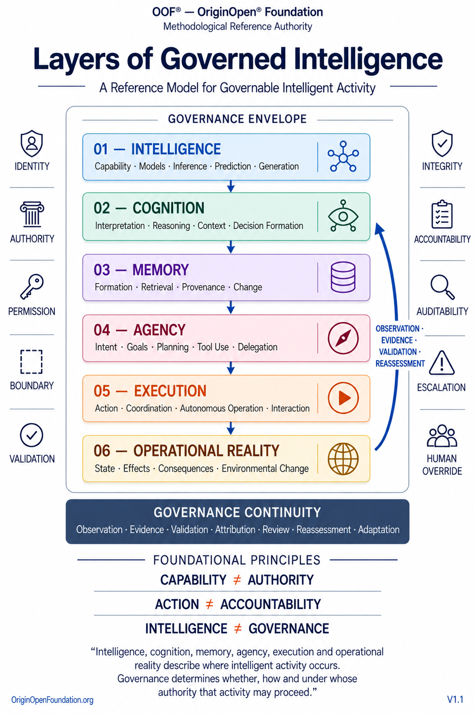

About Layers of Governed Intelligence

Artifact: Layers of Governed Intelligence
Artifact Type: OOF® Reference Model
Descriptor: A Reference Model for Governable Intelligent Activity
Domain: Governable Intelligent Activity
Reference Authority: OOF® — OriginOpen® Foundation
What Is Layers of Governed Intelligence?
Layers of Governed Intelligence is an OOF® Reference Model for understanding where intelligent activity occurs and where governance must remain connected as intelligent capability develops into operational consequence .
The model separates intelligent activity into six distinct but interconnected layers:
Intelligence → Cognition → Memory → Agency → Execution → Operational Reality
Each layer represents a different functional domain of intelligent activity.
The model addresses a fundamental governance problem: intelligent systems are often described primarily through models, reasoning, agents, autonomy, or technical capability, while their governance implications extend across a much broader operational structure.
A model may generate.
Cognition may interpret and reason.
Memory may preserve and retrieve context.
Agency may establish goals and plans.
Execution may produce action.
Operational Reality determines what actually occurs when those capabilities interact with people, systems, assets, environments, institutions, resources, and other external conditions.
Governable intelligence therefore cannot be understood through capability alone. It must be understood across the layers through which intelligent activity becomes operationally consequential.
Core Reference Question
Where does governable intelligent activity occur, and what governance must remain connected across its layers?
The model answers this question by distinguishing six domains that are frequently collapsed into broad concepts such as AI , agent , autonomy , or intelligent system .
This distinction matters because governance requirements applying to intelligence capability are not necessarily identical to those applying to cognition, memory, agency, execution, or Operational Reality.
The model therefore provides a common reference structure for locating where intelligent activity, governance controls, decisions, responsibilities, failures, and consequences occur .
The Six Layers of Governed Intelligence
01 — Intelligence
Capability · Models · Inference · Prediction · Generation
The Intelligence layer represents the capability of a system to produce intelligent outputs or perform intelligence-related functions.
It may include inference, prediction, generation, classification, optimization, and other model-enabled capabilities.
But capability alone establishes neither legitimate authority nor permission to act.
A system may possess significant intelligence while possessing no independent operational authority .
This establishes a foundational boundary:
CAPABILITY ≠ AUTHORITY
Intelligence describes what a system can do.
Governance determines whether, where, how, and under whose authority that capability may be used.
02 — Cognition
Interpretation · Reasoning · Context · Decision Formation
The Cognition layer represents the processes through which information is interpreted, contextualized, reasoned over, and transformed into potential decisions.
This layer matters because intelligent output and governed decision formation are not equivalent.
A prediction may inform reasoning.
Reasoning may generate options.
Interpretation may influence a decision.
But none of these automatically establishes legitimate authority, responsibility, permission, or authorization for subsequent action.
Governance must therefore remain capable of distinguishing information production from reasoning, reasoning from decision formation, and decision formation from operational action .
03 — Memory
Formation · Retrieval · Provenance · Change
The Memory layer represents how information, context, prior interactions, system states, experiences, and other retained information are formed, preserved, retrieved, changed, and reused.
Memory introduces governance questions that do not exist in stateless intelligence alone.
What entered memory?
Where did it originate?
Has it changed?
What was retrieved?
Which reasoning, decision, or action relied upon it?
Should it still influence current activity?
Memory may shape cognition, decisions, agency, and future behavior long after the information was originally created.
Governable intelligent activity therefore requires memory to remain connected to provenance, change, appropriate boundaries, accountability, and subsequent use .
04 — Agency
Intent · Goals · Planning · Tool Use · Delegation
The Agency layer represents the transition from processing information toward pursuing objectives.
Agency may involve intent, goal formation, planning, tool selection, delegation, coordination, or preparation for external action.
This creates a critical governance boundary.
A system capable of reasoning about an action is not necessarily authorized to initiate it.
A system capable of using a tool is not necessarily permitted to use that tool for every available purpose.
A system capable of delegating activity does not automatically possess unlimited authority to transfer that activity to another agent or system.
Agency therefore makes the distinction between technical capability and legitimate operational authority increasingly consequential.
05 — Execution
Action · Coordination · Autonomous Operation · Interaction
The Execution layer is where intended, planned, or authorized activity becomes action.
Execution may include software operations, tool calls, transactions, communications, physical actions, multi-agent coordination, autonomous operations, or interactions with external systems and people.
At this layer, governance can no longer be concerned only with what a system knows, reasons, remembers, intends, or plans.
It must govern what the system actually does .
But execution does not determine its own outcome.
ACTION ≠ OUTCOME
The same action may produce an expected effect, an unexpected effect, an indirect effect, a delayed consequence, an external interaction, or no meaningful effect at all.
Execution must therefore remain connected to the layer where its actual effects become observable:
Operational Reality.
06 — Operational Reality
Observed State · Effects · Consequences · Evidence
Operational Reality represents the environment in which intelligent activity produces — or fails to produce — actual effects.
It is where intended activity encounters real systems, people, assets, institutions, infrastructure, environments, resources, and external conditions.
This layer prevents governance from treating intention, system output, authorization, or successful execution as equivalent to actual consequence.
The governing question becomes:
What actually happened?
Operational Reality may diverge from intention, prediction, simulation, expectation, or system-reported success.
Governance must therefore remain capable of examining actual state, effects, consequences, and the evidential basis through which those conditions can be established.
Execution tells us what was done. Operational Reality tells governance what actually happened.
The Governance Envelope
The six layers do not operate outside governance.
They exist within a Governance Envelope connecting intelligent activity to persistent governance dimensions.
These include:
Identity · Authority · Permission · Boundary · Validation
and
Integrity · Accountability · Auditability · Escalation · Human Override
The Governance Envelope is intentionally not represented as a seventh layer.
Governance is not simply another stage after intelligence, agency, or execution.
It is a cross-layer condition that must remain connected to intelligent activity wherever governance relevance exists.
Identity may matter across cognition, memory, agency, and execution.
Authority may constrain agency and execution.
Permission may determine whether a specific action may proceed.
Validation may apply to information, evidence, decisions, or other governed objects.
Accountability and auditability may extend across multiple layers simultaneously.
Human Override may become critical when intelligent activity reaches operational execution.
The Governance Envelope therefore prevents governance from being reduced to a final compliance checkpoint surrounding an otherwise autonomous technical process.
Governance surrounds intelligent activity because governance responsibility does not begin or end at a single layer.
Governance Continuity
Governance must remain connected not only across layers, but also across time.
The model therefore recognizes:
Evidence · Attribution · Review · Correction · Reassessment · Evolution
as elements of governance continuity.
What occurs in Operational Reality may reveal that earlier assumptions, decisions, permissions, boundaries, or controls require reconsideration.
Evidence may enable attribution.
Attribution may trigger review.
Review may require correction.
Correction may require reassessment.
Repeated reassessment may ultimately require governance evolution.
The model therefore rejects the assumption that governance is complete merely because an activity was previously approved.
Governance must remain capable of learning from Operational Reality without allowing Operational Reality to retroactively legitimize unauthorized activity.
Operational Reality Feedback
The relationship between the six layers is not purely downward.
Operational Reality can generate:
Observation · Evidence · Reassessment
that informs future governance and future intelligent activity.
Unexpected effects may change boundaries.
Validated evidence may alter permissions.
Operational failures may require new controls.
Observed consequences may change future decisions.
Repeated patterns may require governance adaptation or architectural change.
This creates a fundamental feedback relationship:
Intelligent activity affects Operational Reality. Operational Reality informs what governance must examine next.
Governance is therefore not only applied before activity reaches reality.
It must remain capable of responding to reality after intelligent activity produces consequences.
The Model Is Layered, Not Mechanically Linear
The six layers establish distinct functional domains, but they do not prescribe a mandatory technical pipeline through which every intelligent system must mechanically travel.
A system may operate without persistent memory.
A decision-support model may influence human cognition without possessing independent agency.
An agent may plan without being permitted to execute.
A system may execute through another system.
Multiple agents may operate across several layers simultaneously.
Human and machine activity may coexist within the same governed structure.
The purpose of the model is therefore not to prescribe a universal AI architecture.
It provides a reference structure for locating intelligent activity and the governance boundaries surrounding it.
Three Foundational Distinctions
Layers of Governed Intelligence establishes three high-level distinctions:
CAPABILITY ≠ AUTHORITY
Capability does not establish legitimate authority.
A system's ability to perform an activity does not determine whether it may perform that activity.
ACTION ≠ ACCOUNTABILITY
The performance of an action and the governance responsibility associated with that action are not automatically identical.
Execution must remain connected to accountable actors, authorities, decisions, and governance structures.
INTELLIGENCE ≠ GOVERNANCE
Increasing intelligence does not inherently produce legitimate, accountable, safe, or governable behavior.
Governance cannot be inferred from intelligence.
Together, these distinctions establish a central methodological principle:
Greater intelligence does not eliminate the need for governance. It increases the importance of knowing where authority, responsibility, boundaries, and consequences reside.
Cross-Layer Governance
Many important governance problems do not exist entirely within one layer.
They emerge between layers .
Intelligence → Cognition A generated output becomes a basis for interpretation or reasoning.
Cognition → Memory An interpretation or decision-relevant context becomes retained information.
Memory → Agency Stored information influences goals, planning, delegation, or tool use.
Agency → Execution Intent and planning become operational action.
Execution → Operational Reality Action produces actual effects and consequences.
Governance must therefore examine not only individual layers but also the transitions through which information, authority, decisions, and activity move between them.
A system may be technically correct within one layer while producing a governance problem in another.
Local technical correctness does not automatically establish end-to-end governability.
Relationship to GIARM™
Layers of Governed Intelligence and GIARM™ — Governed Intelligent Activity Reference Model describe different dimensions of the broader governability problem.
Layers of Governed Intelligence asks:
Where does governable intelligent activity occur?
GIARM™ asks:
How does intelligent activity remain governable from purpose and authority through decision, action, Operational Reality, evidence, and governance adaptation?
Layers of Governed Intelligence provides the structural view .
GIARM™ provides the end-to-end governance lifecycle view .
The Governable Intelligent Activity Decision Tree™ adds the governance decision view:
Under what governance conditions may intelligent activity proceed?
Together:
Layers of Governed Intelligence → WHERE
GIARM™ → HOW
Governable Intelligent Activity Decision Tree™ → UNDER WHAT CONDITIONS
The three artifacts are complementary, but they are not interchangeable.
Relationship to OOF® Governance Architectures
Layers of Governed Intelligence is an OOF® Reference Model , not a Governance Architecture.
It does not replace architecture-specific governed spaces, Architecture Maps, Parent Standards, Core Modules, governance mechanisms, or implementation requirements.
Instead, it provides a common structural reference across which different OOF® Governance Architectures may operate.
An architecture may govern identity, cognition, memory, agency, accountability, validation, integrity, Operational Reality, or another specific domain without acquiring ownership of every layer through which that concern may appear.
This preserves an important architectural principle:
A governance concern may cross multiple layers without making those layers part of the same governed domain.
The model therefore helps position governance architectures relative to intelligent activity while preserving their distinct governed spaces and responsibilities.
Application Scope
Layers of Governed Intelligence can provide a common reference structure for:
AI models, generative AI, decision systems, AI agents, agentic systems, autonomous systems, multi-agent environments, robotics, human–AI systems, intelligent infrastructure, tool-using AI, machine-to-machine environments, distributed intelligent systems, and future forms of intelligent technology.
Because the model describes functional layers rather than a specific technical implementation, it can remain applicable as models, agents, architectures, interfaces, and autonomous capabilities evolve.
The underlying question remains:
Where is intelligent activity occurring, and what governance must remain connected to it?
What the Model Does Not Do
Layers of Governed Intelligence does not prescribe how an AI system must technically be built.
It does not require every system to implement all six layers as separate software components.
It does not define a maturity model.
It does not rank systems according to intelligence or autonomy.
It does not determine whether a particular action is authorized.
It does not replace GIARM™, the Governable Intelligent Activity Decision Tree™, OOF® Governance Architectures, technical standards, laws, regulations, or organizational controls.
Its purpose is more fundamental:
to establish a common structural reference for locating intelligent activity and understanding where governance must remain connected as intelligence extends through cognition, memory, agency, execution, and Operational Reality.
Foundational Principle
Intelligence does not become governable merely by becoming more capable. Governability depends on maintaining legitimate governance across the layers through which intelligent activity becomes operationally consequential.
Canonical Closing Statement
Intelligence, cognition, memory, agency, execution, and Operational Reality describe where intelligent activity occurs. They are connected, but they are not interchangeable. Capability does not establish authority. Action does not establish accountability. Intelligence does not establish governance. Layers of Governed Intelligence provides a common OOF® reference structure for keeping these domains distinct while connecting them within a continuous Governance Envelope — from intelligent capability to the realities and consequences that intelligent activity ultimately produces.
Intelligence describes what a system can become capable of. Governance determines how that capability may enter Operational Reality.